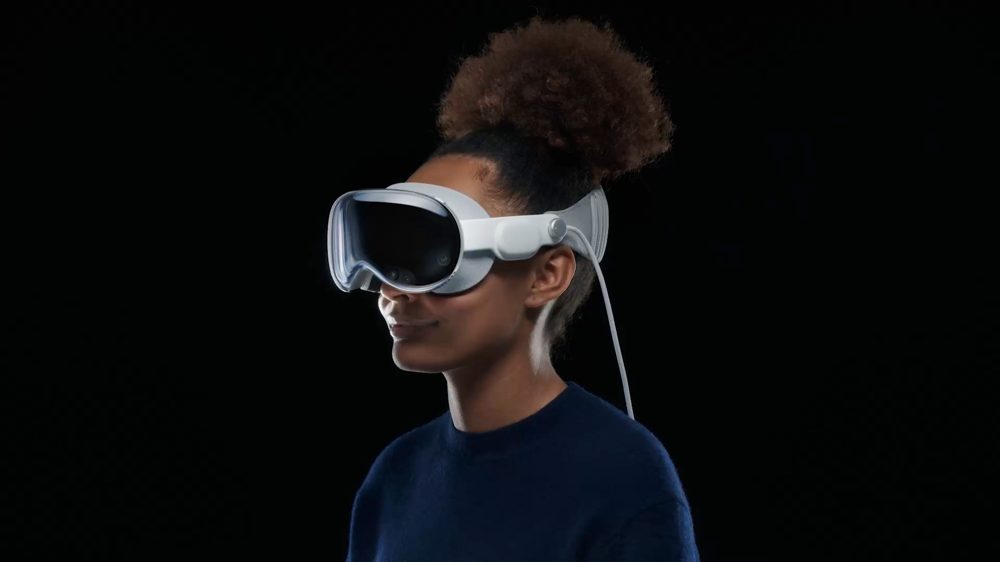
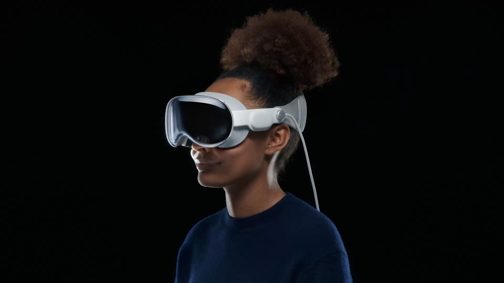
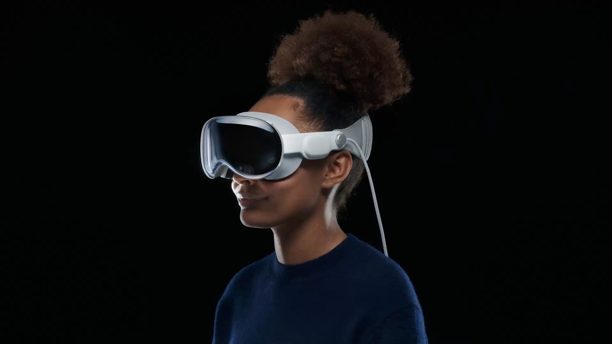

Comparative images demonstrating technological advances
 

The Vision Pro is powered by an M2 processor with 8 CPU cores and 10 GPU cores–the same as you would find in a MacBook. It has 16GB of RAM and 256GB, 512GB, or 1TB of flash storage.
There are 14 cameras on the inside and outside, a LiDAR scanner, multiple IR illuminators, an accelerometer, gyroscope, and multiple microphones. A custom R1 processor is made to process the vast amount of data from these sensors very quickly, for lightning-fast eye tracking and a delay for the video pass-through of only 12 milliseconds.
Internal components can be accessed externally by removing the glass panel. External glass panel protects sensors, cameras and EyeSight display from mechanical damage and dust ingress
Under the translucent film and layer of special microlenses there is an external OLED-display EyeSight, which serves to display the image of the user’s eyes and other secondary information.
Apple divided the cooling system of the headset into two contours corresponding to two «wings» of the system board. Two (presumably) graphite screens are used to transfer heat from the components, adjacent directly to the fans on the back.
Processor Apple M2, located on the left «wing» of the system board together with SSD and RAM. The power cells, together with the Apple R1 chip, which is responsible for pre-processing data from sensors, sensors and microphones, are located on the right side.
The battery pack alone weighs 353 grams and is made of three iPhone-sized batteries, delivering a grand total of 35.9 Wh, more than double an iPhone 15 Pro’s 17.3 Wh. The cells themselves are 184 g apiece, surprisingly only about half the weight of the full battery pack. To get inside, we had to soften some perimeter adhesive and release a set of single-use metal clips—then twist open Torx screws galore.
The speakers—not quite as hard to get into as a pair of AirPods Pro, but almost. The speakers themselves point back towards your ears. This is a pretty clear indication that you’re not meant to wear this anywhere noisy. You can wear your AirPods Pro if you prefer—and if you want lossless, low-latency audio, they’ll have to be the latest USB-C version.
